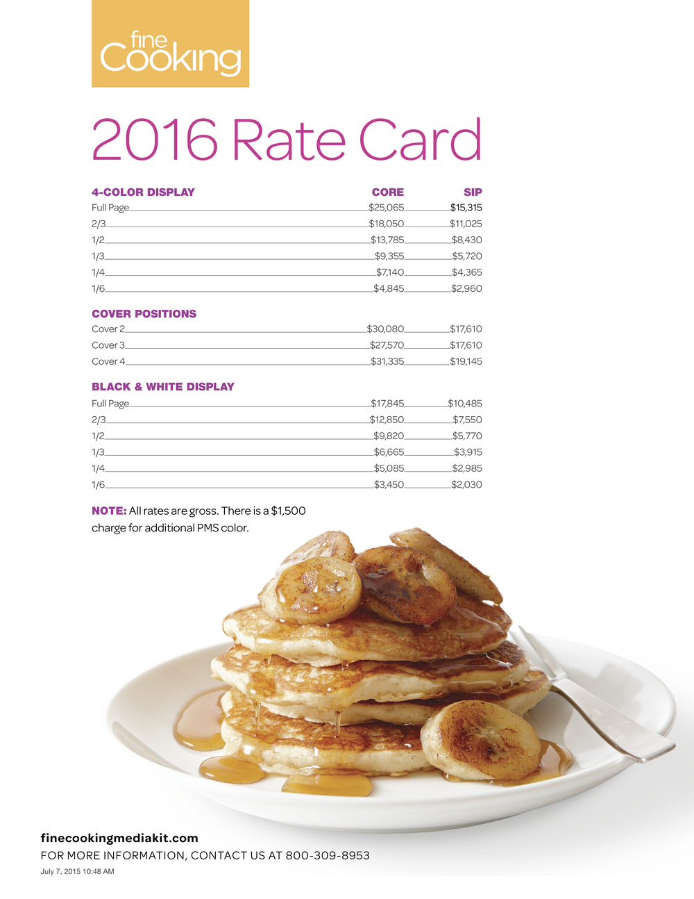

While working at Taunton Press, a publisher with five unique lifestyle brands, I was tasked to work with copywriters and each brand’s marketing team to compile similar sets of information to create media kits for 2016. The slideshow below contains selected pages of Fine Cooking’s media kit each created with stylized rules and branded photography.